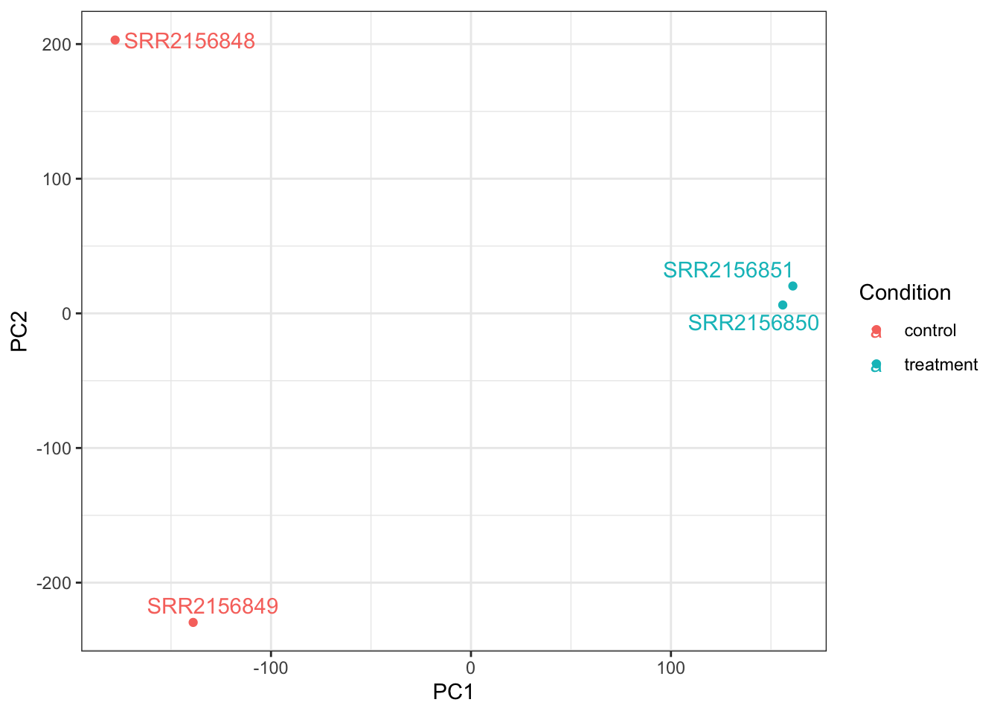
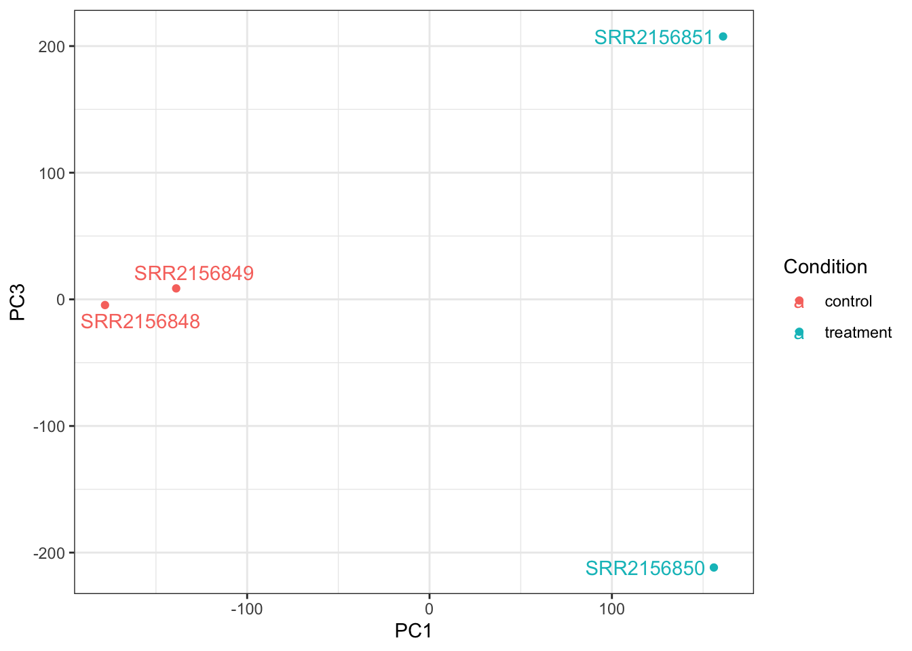

First, let’s input the analysis results that are done on AWS.
library(tximport)library(rhdf5)# Make sure you are in the correct directorysetwd("/Users/apple")# Find the quant directoriesfolders <-dir(pattern="_quant$")# Extract sample namessamples <-sub("_quant", "", folders)# Build the full paths to abundance.h5files <-file.path(folders, "abundance.h5")names(files) <- samples# Importtxi.kallisto <-tximport(files, type="kallisto", txOut=TRUE)
After importing the data and cleaning them, we can start the principal componenet analysis.
pca <-prcomp(t(x), scale=TRUE)summary(pca)
Importance of components:
PC1 PC2 PC3 PC4
Standard deviation 183.6379 177.3605 171.3020 1e+00
Proportion of Variance 0.3568 0.3328 0.3104 1e-05
Cumulative Proportion 0.3568 0.6895 1.0000 1e+00
Finally, let’s make the PCA plots about PC1, PC2 and PC3 using the ggplot and ggrepel packages.
library(ggplot2)library(ggrepel)# Make metadata object for the samplescolData <-data.frame(condition =factor(rep(c("control", "treatment"), each =2)))rownames(colData) <-colnames(txi.kallisto$counts)# Make the data.frame for ggplot y <-as.data.frame(pca$x)y$Condition <-as.factor(colData$condition)ggplot(y) +aes(PC1, PC2, col=Condition) +geom_point() +geom_text_repel(label=rownames(y)) +theme_bw()

# Make metadata object for the samplescolData <-data.frame(condition =factor(rep(c("control", "treatment"), each =2)))rownames(colData) <-colnames(txi.kallisto$counts)# Make the data.frame for ggplot y <-as.data.frame(pca$x)y$Condition <-as.factor(colData$condition)ggplot(y) +aes(PC1, PC3, col=Condition) +geom_point() +geom_text_repel(label=rownames(y)) +theme_bw()

# Make metadata object for the samplescolData <-data.frame(condition =factor(rep(c("control", "treatment"), each =2)))rownames(colData) <-colnames(txi.kallisto$counts)# Make the data.frame for ggplot y <-as.data.frame(pca$x)y$Condition <-as.factor(colData$condition)ggplot(y) +aes(PC2, PC3, col=Condition) +geom_point() +geom_text_repel(label=rownames(y)) +theme_bw()